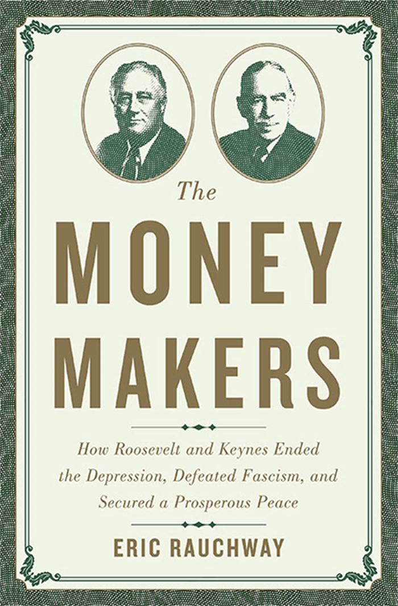
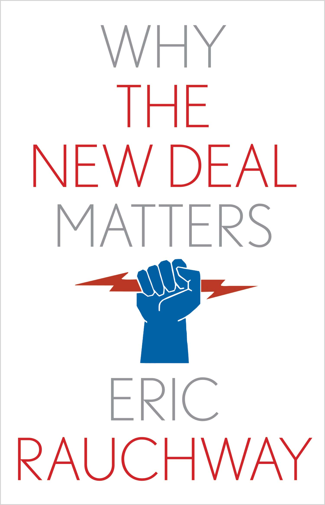
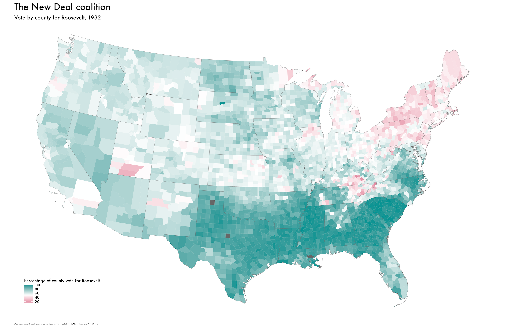
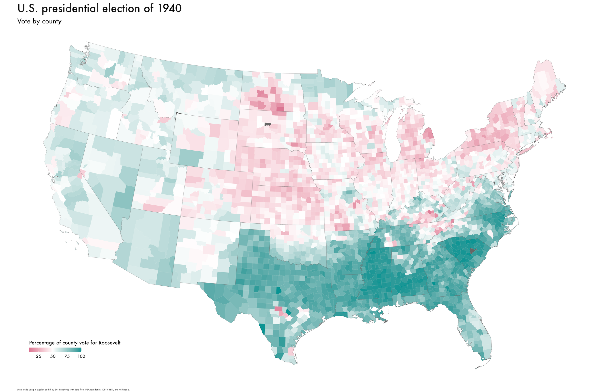

Wine, War, and the New Deal
Eric Rauchway
17 January 2024
For accessibility or convenience
http://ericrauchway.com/present/
Treasury records
1933
Wine is good for you
An American viticultural area
A New Deal for wine
Limits of solicitude
Methods and interpretations
establishment of broad, quantified trends combined with the stories of exemplary or influence cases
influence of material international factors (immigration, trade) on internal US affairs
the federal state under the New Deal
devolving power to local institutions / solicitous of local knowledge
effective in promoting economic recovery
pro-democracy (or at least, anti-Nazi)


The New Deal and economic growth
“what Hitler really is”
Democratizing work and space
Following the lines of the land
A war for the New Deal
Fin
Various elections of the New Deal era


V for “vernacular interventionism”
Interwar business cycles
New Deal budget-balancing
Unemployment in the 1930s